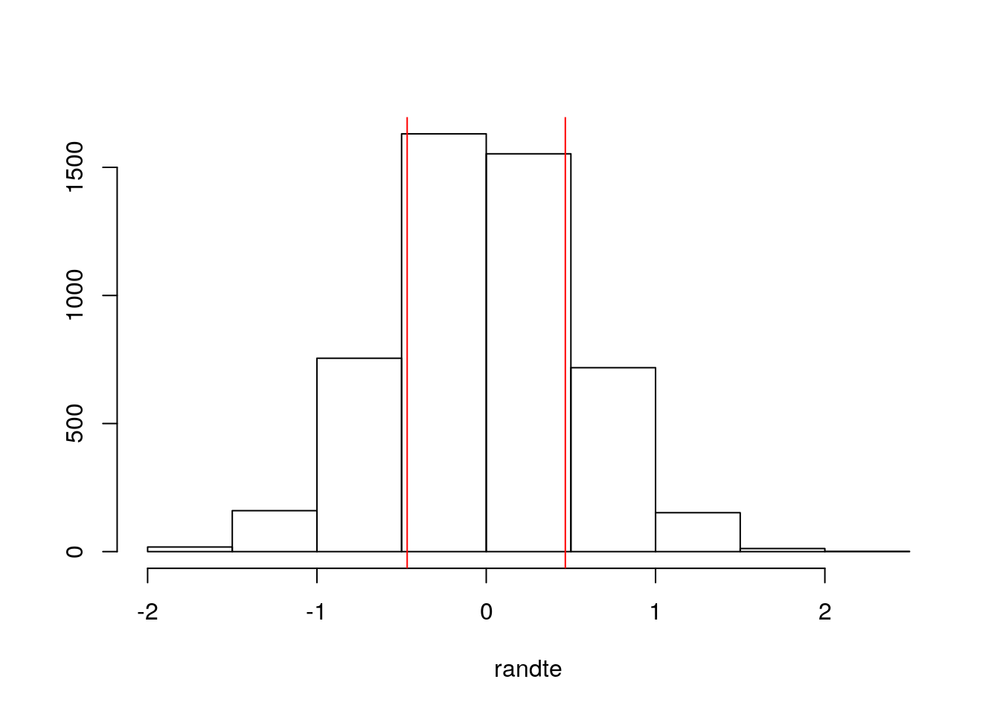
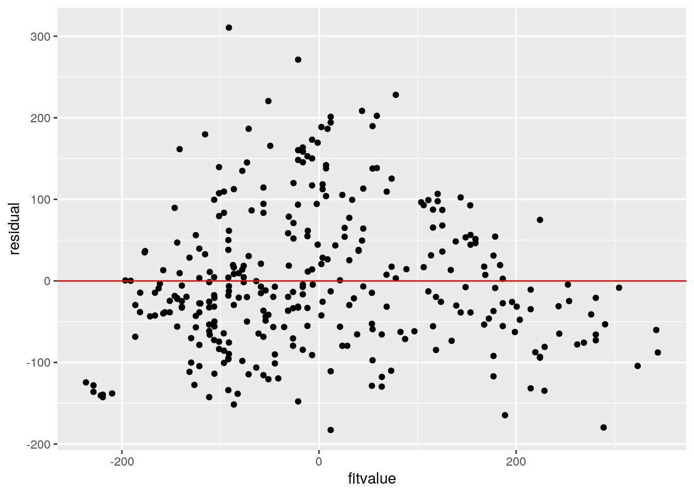

May 9, 2021
R Markdown
This is an R Markdown document. Markdown is a simple formatting syntax for authoring HTML, PDF, and MS Word documents. For more details on using R Markdown see http://rmarkdown.rstudio.com.
When you click the Knit button a document will be generated that includes both content as well as the output of any embedded R code chunks within the document. You can embed an R code chunk like this:
## Introduction: The data that I chose is called "Baseball" This data set includes a total of 322 observations and 25 variables. The variables are the following: name1 (player's first name), name2 (player's last name), atbat86 (official bat appearances), hits86 (number of hits), homer86 (number of homeruns), runs86 (number of runs), rbi86 (runs batted in), walks86 (number of walks), years (years in Major League), atbat (career times at bat), hits (career hits), homeruns (career homeruns), runs (career runs), rbi (career runs battled in), walks (career walks), league86 (player's league in 1986), div86 (player's division), team86 (player's team), posit86 (player's position), outs86 (number of putouts), assist86 (number of assists), error86 (number of assists), sal87 (salary USD), league87 (league in 1987), and team87 (team in 1987).
library(ggplot2)
library(tidyverse)## ── Attaching packages ─────────────────────────────────────── tidyverse 1.3.0 ──## ✓ tibble 3.0.4 ✓ dplyr 1.0.2
## ✓ tidyr 1.1.2 ✓ stringr 1.4.0
## ✓ readr 1.4.0 ✓ forcats 0.5.0
## ✓ purrr 0.3.4## ── Conflicts ────────────────────────────────────────── tidyverse_conflicts() ──
## x dplyr::filter() masks stats::filter()
## x dplyr::lag() masks stats::lag()library(readr)
library(readxl)
Baseball <- read_excel("Baseball_Project 2.xlsx")## New names:
## * `` -> ...1library(AER)## Loading required package: car## Loading required package: carData##
## Attaching package: 'car'## The following object is masked from 'package:dplyr':
##
## recode## The following object is masked from 'package:purrr':
##
## some## Loading required package: lmtest## Loading required package: zoo##
## Attaching package: 'zoo'## The following objects are masked from 'package:base':
##
## as.Date, as.Date.numeric## Loading required package: sandwich## Loading required package: survivalBAS <- data.frame(Baseball)
man <- manova(cbind(runs86, walks86)~league86, data=BAS)
summary(man)## Df Pillai approx F num Df den Df Pr(>F)
## league86 1 0.031665 5.2157 2 319 0.005903 **
## Residuals 320
## ---
## Signif. codes: 0 '***' 0.001 '**' 0.01 '*' 0.05 '.' 0.1 ' ' 1summary.aov(man)## Response runs86 :
## Df Sum Sq Mean Sq F value Pr(>F)
## league86 1 4917 4917 7.4051 0.00686 **
## Residuals 320 212481 664
## ---
## Signif. codes: 0 '***' 0.001 '**' 0.01 '*' 0.05 '.' 0.1 ' ' 1
##
## Response walks86 :
## Df Sum Sq Mean Sq F value Pr(>F)
## league86 1 309 308.96 0.6591 0.4175
## Residuals 320 150003 468.76BAS%>%group_by(league86)%>%summarize(mean(runs86), mean(walks86))## `summarise()` ungrouping output (override with `.groups` argument)## # A tibble: 2 x 3
## league86 `mean(runs86)` `mean(walks86)`
## <chr> <dbl> <dbl>
## 1 A 54.5 39.6
## 2 N 46.6 37.7pairwise.t.test(BAS$runs86,
BAS$league86, p.adjust.method = "none")##
## Pairwise comparisons using t tests with pooled SD
##
## data: BAS$runs86 and BAS$league86
##
## A
## N 0.0069
##
## P value adjustment method: nonepairwise.t.test(BAS$walks86,
BAS$league86, p.adjust.method = "none")##
## Pairwise comparisons using t tests with pooled SD
##
## data: BAS$walks86 and BAS$league86
##
## A
## N 0.42
##
## P value adjustment method: nonelibrary(rstatix)##
## Attaching package: 'rstatix'## The following object is masked from 'package:stats':
##
## filtergro <- BAS$league86
BS <- BAS %>% select(runs86, walks86)
sapply(split(BS, gro), mshapiro_test)## A N
## statistic 0.9640559 0.988169
## p.value 0.0001763907 0.2467866## A MANOVA test, 2 ANOVA, and 2 t-tests were performed on the "Baseball" data chosen. From the MANOVA test, Pillai = 0.031665, F = 5.2157, and p = 0.005903, suggesting that there is a difference among the baseball statistics for at least one of the quantatitve (numerical) variables. For league86, the results indicated, F = 7.4051 and p = 0.00686. From the pairwise t-test comparisons, runs86 and walks86 were compared which resulted in a differentiation. The p-value for N league86 was <0.05 so therefore it is not significant and the main assumptions were broken.
library(vegan)## Loading required package: permute## Loading required package: lattice## This is vegan 2.5-7BAS %>% group_by(league86) %>% summarize(means = mean(years)) %>%
summarize(mean.difftime = diff(means))## `summarise()` ungrouping output (override with `.groups` argument)## # A tibble: 1 x 1
## mean.difftime
## <dbl>
## 1 -0.467randte <- vector()
for (i in 1:5000) {
new <- data.frame(years = sample(BAS$years), league86 = BAS$league86)
randte[i] <- mean(new[new$league86 == "N",]$years) - mean(new[new$league86
== "A",]$years)
}
{hist(randte, main = "", ylab = ""); abline(v = c (-0.467, 0.467), col = "red")}
mean(randte> 0.467 | randte < -0.467) ## [1] 0.3914## HO: The years a player has actually played in the Major Leagues is the same for League A and League N. HA: The years a player has actually played in the Major Leagues is different from League A and League N. The calculated p-value is 0.4, therefore you reject the HO.
BAS$rbi86_c <- BAS$rbi86 - mean(BAS$rbi86)
BAS$atbat86_c <- BAS$atbat86 - mean(BAS$atbat86)
fit2 <- lm(atbat86_c ~ league86*rbi86_c, data = BAS)
summary(fit2)##
## Call:
## lm(formula = atbat86_c ~ league86 * rbi86_c, data = BAS)
##
## Residuals:
## Min 1Q Median 3Q Max
## -182.77 -59.91 -14.53 51.82 310.49
##
## Coefficients:
## Estimate Std. Error t value Pr(>|t|)
## (Intercept) -2.1823 6.7032 -0.326 0.745
## league86N 5.9564 9.9620 0.598 0.550
## rbi86_c 4.7195 0.2401 19.657 <2e-16 ***
## league86N:rbi86_c 0.2834 0.3916 0.724 0.470
## ---
## Signif. codes: 0 '***' 0.001 '**' 0.01 '*' 0.05 '.' 0.1 ' ' 1
##
## Residual standard error: 87.98 on 318 degrees of freedom
## Multiple R-squared: 0.6741, Adjusted R-squared: 0.6711
## F-statistic: 219.3 on 3 and 318 DF, p-value: < 2.2e-16coef(fit2)## (Intercept) league86N rbi86_c league86N:rbi86_c
## -2.182251 5.956408 4.719477 0.283404BAS%>% ggplot(aes(rbi86_c, atbat86_c)) + geom_point() + geom_smooth(method = 'lm', se= F)## `geom_smooth()` using formula 'y ~ x'cor(BAS$rbi86_c, BAS$atbat86_c)## [1] 0.8205392residual <- fit2$residuals
fitvalue <- fit2$fitted.values
ggplot() + geom_point(aes(fitvalue, residual)) + geom_hline(yintercept = 0, color = 'red')
ggplot() + geom_histogram(aes(residual))## `stat_bin()` using `bins = 30`. Pick better value with `binwidth`.
ggplot() + geom_qq(aes(sample = residual)) + geom_qq()coeftest(fit2)[,1:2]## Estimate Std. Error
## (Intercept) -2.182251 6.7032324
## league86N 5.956408 9.9619500
## rbi86_c 4.719477 0.2400962
## league86N:rbi86_c 0.283404 0.3916450coeftest(fit2, vcov = vcovHC(fit2))[,1:2]## Estimate Std. Error
## (Intercept) -2.182251 6.8313463
## league86N 5.956408 10.0999825
## rbi86_c 4.719477 0.2092115
## league86N:rbi86_c 0.283404 0.3727798fit3 <- lm(atbat86~rbi86, data = BAS)
SST <- sum((BAS$atbat86-mean(BAS$atbat86))^2)
SSR <- sum((fit3$fitted.values-mean(BAS$atbat86))^2)
SSE <- sum(fit3$residuals^2)
SSR/SST## [1] 0.6732846## Based on the data, the coefficient was positive, which indicated the rbi86 variable (x-axis) increase, then the atbat86 variable (y-axis) will also increase. In order to show the interaction between these two variables, a ggplot was created, showing homoskedasticity was not met. In addition, the standard errors for the robust differ from the non-robust and the model explains 67.33% variation outcome.
sample_dist <- replicate(5000, {
data1 <- data1 <- BAS[sample(nrow(BAS), replace = TRUE),]
fit3 <- lm(atbat86_c ~ league86*rbi86_c, data = data1)
coef(fit3)
})
sample_dist%>%t%>%as.data.frame%>%summarize_all(sd)## (Intercept) league86N rbi86_c league86N:rbi86_c
## 1 6.929873 10.16764 0.2099175 0.375558## The original and the robust have the smallest SE values and the original SE and robust SE p-value show to be less than as well.
library(tidyverse)
library(lmtest)
library(plotROC)
data3 <- BAS%>%mutate(y=ifelse(league86=="N",1,0))
head(data3)## ...1 name1 name2 atbat86 hits86 homer86 runs86 rbi86 walks86 years atbat
## 1 1 Al Newman 185 37 1 23 8 21 2 214
## 2 2 Alan Ashby 315 81 7 24 38 39 14 3449
## 3 3 Alan Trammell 574 159 21 107 75 59 10 4631
## 4 4 Alan Wiggins 239 60 0 30 11 22 6 1941
## 5 5 Alex Trevino 202 53 4 31 26 27 9 1876
## 6 6 Alfredo Griffin 594 169 4 74 51 35 11 4408
## hits homeruns runs rbi walks league86 div86 team86 posit86 outs86 assist86
## 1 42 1 30 9 24 N E Mon 2B 76 127
## 2 835 69 321 414 375 N W Hou C 632 43
## 3 1300 90 702 504 488 A E Det SS 238 445
## 4 510 4 309 103 207 A E Bal 2B 121 151
## 5 467 15 192 186 161 N W LA C 304 45
## 6 1133 19 501 336 194 A W Oak SS 282 421
## error86 sal87 league87 team87 rbi86_c atbat86_c y
## 1 7 70 A Min -40.02795 -195.92857 1
## 2 10 475 N Hou -10.02795 -65.92857 1
## 3 22 517.14300000000003 A Det 26.97205 193.07143 0
## 4 6 700 A Bal -37.02795 -141.92857 0
## 5 11 512.5 N LA -22.02795 -178.92857 1
## 6 25 750 A Oak 2.97205 213.07143 0fit4 <- glm(y~years, data = data3,,family = binomial(link = "logit"))
coeftest(fit4)##
## z test of coefficients:
##
## Estimate Std. Error z value Pr(>|z|)
## (Intercept) -0.030430 0.202990 -0.1499 0.8808
## years -0.019394 0.022892 -0.8472 0.3969exp(coef(fit3))## (Intercept) rbi86
## 1.251069e+65 1.227881e+02logi <- function(x){exp(x)/(1+exp(x))}
table(truth=data3$league86, prediction=data3$years>1)%>%addmargins## prediction
## truth FALSE TRUE Sum
## A 11 164 175
## N 11 136 147
## Sum 22 300 322(164+136)/322## [1] 0.931677136/147## [1] 0.9251701164/175## [1] 0.9371429164/300## [1] 0.5466667wid <- diff(data3$y)
hei <- vector()
for (i in 1:100) hei[i]<-data3$y[i] + data3$y[i+1]
AUC <- sum(hei*wid/2)## Warning in hei * wid: longer object length is not a multiple of shorter object
## lengthAUC%>%round(3)## [1] -6.5BAS$logit <- predict(fit4, type = "link")
BAS%>%ggplot() + geom_density(aes(logit, color=league86, fill=league86), alpha = .5) + theme(legend.position = c(.3,.6)) + geom_vline(xintercept = 2) + xlab("logit (log-odd)") + geom_rug(aes(logit, color = league86))library(plotROC)
ROC <- ggplot(data3) + geom_roc(aes(d=y, m=years), n.cuts = 0)
ROC
calc_auc(ROC)## PANEL group AUC
## 1 1 -1 0.4669193## From the data above, the estimated intercept is -0.030430. In order to calculate the accuracy, sensitivity, specificity, and precision, a table was created. The table showed accuracy to be 0.931677, specificity to be 0.9251701, sensitivty to be 0.9371429, and precision to be 0.5466667. The AUC is considered bad because it valued at -6.5. From the ROC, AUC was calculated to be 0.4669193.
library(tidyverse)
library(lmtest)
library(pROC)## Type 'citation("pROC")' for a citation.##
## Attaching package: 'pROC'## The following object is masked from 'package:plotROC':
##
## ggroc## The following objects are masked from 'package:stats':
##
## cov, smooth, varlibrary(glmnet)## Loading required package: Matrix##
## Attaching package: 'Matrix'## The following objects are masked from 'package:tidyr':
##
## expand, pack, unpack## Loaded glmnet 4.0-2diag1 <-function(probs,truth){
tab<-table(factor(probs>.5,levels=c("FALSE","TRUE")),truth)
acc=sum(diag(tab))/sum(tab)
sens=tab[2,2]/colSums(tab)[2]
spec=tab[1,1]/colSums(tab)[1]
ppv=tab[2,2]/rowSums(tab)[2]
if(is.numeric(truth)==FALSE & is.logical(truth)==FALSE) truth<-as.numeric(truth)-1
ord<-order(probs, decreasing=TRUE)
probs <- probs[ord]; truth <- truth[ord]
TPR=cumsum(truth)/max(1,sum(truth))
FPR=cumsum(!truth)/max(1,sum(!truth))
dup<-c(probs[-1]>=probs[-length(probs)], FALSE)
TPR<-c(0,TPR[!dup],1); FPR<-c(0,FPR[!dup],1)
n <- length(TPR)
auc<- sum( ((TPR[-1]+TPR[-n])/2) * (FPR[-1]-FPR[-n]) )
data.frame(acc,sens,spec,ppv,auc)
}
k=10
data10<-data3[sample(nrow(data3)),]
folds<-cut(seq(1:nrow(data3)),breaks=k,labels=F)
diag<-NULL
for(i in 1:k){
test1 <-data10[folds!=i,]
test<-data10[folds==i,]
truth<-test$y
fit<-glm(y~years,data=data3,family="binomial")
probs<-predict(fit,newdata = test,type="response")
diag <-rbind(diag,diag1(probs,truth))
}
summarize_all(diag,mean)## acc sens spec ppv auc
## 1 0.54375 0 1 NaN 0.533324data10$binary<-ifelse(data10$league86=="N",1,0)
y<-as.matrix(data10$binary)
x<-model.matrix(binary~atbat86+hits86+homer86+runs86+rbi86+walks86+years+atbat+hits+homeruns+runs+rbi+walks+outs86+assist86+error86+sal87
,data=data10)[,-1]
head(x)## atbat86 hits86 homer86 runs86 rbi86 walks86 years atbat hits homeruns runs
## 287 578 138 1 56 59 34 3 1399 357 7 149
## 246 486 145 11 51 76 40 11 3967 1102 67 410
## 13 418 113 13 48 61 47 4 1512 392 41 205
## 304 562 169 17 88 73 53 8 3181 841 61 450
## 1 185 37 1 23 8 21 2 214 42 1 30
## 215 288 65 8 30 36 27 9 2815 698 55 315
## rbi walks outs86 assist86 error86 sal871000 sal871008.333
## 287 161 87 133 371 20 0 0
## 246 497 284 88 204 16 0 0
## 13 204 203 211 11 7 0 0
## 304 342 373 351 442 17 0 0
## 1 9 24 76 127 7 0 0
## 215 325 189 259 30 10 0 0
## sal871041.6669999999999 sal871043.3330000000001 sal87105 sal871050 sal87110
## 287 0 0 0 0 0
## 246 0 0 0 0 0
## 13 0 0 0 0 0
## 304 0 0 0 0 0
## 1 0 0 0 0 0
## 215 0 0 0 0 0
## sal871100 sal87115 sal871150 sal871175 sal871183.3330000000001 sal87120
## 287 0 0 0 0 0 0
## 246 0 0 0 0 0 0
## 13 0 0 0 0 0 0
## 304 0 0 0 0 0 0
## 1 0 0 0 0 0 0
## 215 0 0 0 0 0 0
## sal871200 sal871220 sal871237.5 sal87125 sal871260 sal87130 sal871300
## 287 0 0 0 0 0 0 0
## 246 0 0 0 0 0 0 0
## 13 0 0 0 0 0 0 0
## 304 0 0 0 0 0 0 0
## 1 0 0 0 0 0 0 0
## 215 0 0 0 0 0 0 0
## sal871310 sal87135 sal871350 sal87137 sal87140 sal87145 sal871450 sal87150
## 287 0 0 0 0 0 0 0 0
## 246 0 0 0 0 0 0 0 0
## 13 0 0 0 0 0 0 0 0
## 304 0 0 0 0 0 0 0 0
## 1 0 0 0 0 0 0 0 0
## 215 0 0 0 0 0 0 0 0
## sal871500 sal87155 sal87160 sal871600 sal87165 sal871670 sal87172 sal87175
## 287 0 0 1 0 0 0 0 0
## 246 0 0 0 0 0 0 0 0
## 13 0 0 0 0 0 0 0 0
## 304 0 0 0 0 0 0 0 0
## 1 0 0 0 0 0 0 0 0
## 215 0 0 0 0 0 0 0 0
## sal87180 sal871800 sal87185 sal871861.46 sal87190 sal871900 sal87191
## 287 0 0 0 0 0 0 0
## 246 0 0 0 0 0 0 0
## 13 0 0 0 0 0 0 0
## 304 0 0 0 0 0 0 0
## 1 0 0 0 0 0 0 0
## 215 0 0 0 0 0 0 0
## sal871925.5709999999999 sal871940 sal87195 sal871975 sal87200 sal87202.5
## 287 0 0 0 0 0 0
## 246 0 0 0 0 0 0
## 13 0 0 0 0 0 0
## 304 0 0 0 0 0 0
## 1 0 0 0 0 0 0
## 215 0 0 0 0 0 0
## sal87210 sal872127.3330000000001 sal87215 sal87225 sal87230 sal87235
## 287 0 0 0 0 0 0
## 246 0 0 0 0 0 0
## 13 0 0 0 0 0 0
## 304 0 0 0 0 0 0
## 1 0 0 0 0 0 0
## 215 0 0 0 0 0 0
## sal87240 sal872412.5 sal87245 sal872460 sal87247.5 sal87250 sal87260
## 287 0 0 0 0 0 0 0
## 246 0 0 0 0 0 0 0
## 13 0 0 0 0 0 0 0
## 304 0 0 0 0 0 0 0
## 1 0 0 0 0 0 0 0
## 215 0 0 0 0 0 0 0
## sal87265 sal87275 sal87277.5 sal87286.66699999999997 sal87297.5 sal87300
## 287 0 0 0 0 0 0
## 246 0 0 0 0 0 0
## 13 0 0 0 0 0 0
## 304 0 0 0 0 0 0
## 1 0 0 0 0 0 0
## 215 0 0 0 0 0 0
## sal87305 sal87320 sal87325 sal87326.66699999999997 sal87340
## 287 0 0 0 0 0
## 246 0 0 0 0 0
## 13 0 0 0 0 0
## 304 0 0 0 0 0
## 1 0 0 0 0 0
## 215 0 0 0 0 0
## sal87341.66699999999997 sal87350 sal87362.5 sal87365 sal87375 sal87385
## 287 0 0 0 0 0 0
## 246 0 0 0 0 0 0
## 13 0 0 0 0 0 0
## 304 0 0 0 0 0 0
## 1 0 0 0 0 0 0
## 215 0 0 0 0 0 0
## sal87400 sal87415 sal87416.66699999999997 sal87420 sal87425 sal87430
## 287 0 0 0 0 0 0
## 246 0 0 0 0 0 0
## 13 0 0 0 0 0 0
## 304 0 0 0 0 0 0
## 1 0 0 0 0 0 0
## 215 0 0 0 0 0 0
## sal87431.5 sal87450 sal87475 sal87480 sal87487.5 sal87490 sal87500
## 287 0 0 0 0 0 0 0
## 246 0 0 0 0 0 0 1
## 13 0 0 0 0 0 0 0
## 304 0 0 0 0 0 0 0
## 1 0 0 0 0 0 0 0
## 215 0 0 0 0 0 0 0
## sal87512.5 sal87517.14300000000003 sal87525 sal87530 sal87535 sal87550
## 287 0 0 0 0 0 0
## 246 0 0 0 0 0 0
## 13 0 0 0 0 0 1
## 304 0 0 0 1 0 0
## 1 0 0 0 0 0 0
## 215 0 0 0 0 0 0
## sal87560 sal87575 sal87580 sal87587.5 sal87595 sal87600 sal87612.5 sal87625
## 287 0 0 0 0 0 0 0 0
## 246 0 0 0 0 0 0 0 0
## 13 0 0 0 0 0 0 0 0
## 304 0 0 0 0 0 0 0 0
## 1 0 0 0 0 0 0 0 0
## 215 0 0 0 0 0 0 0 0
## sal87630 sal87640 sal87650 sal87657 sal87662.5 sal8767.5 sal87670 sal87675
## 287 0 0 0 0 0 0 0 0
## 246 0 0 0 0 0 0 0 0
## 13 0 0 0 0 0 0 0 0
## 304 0 0 0 0 0 0 0 0
## 1 0 0 0 0 0 0 0 0
## 215 0 0 1 0 0 0 0 0
## sal8768 sal8770 sal87700 sal87708.33299999999997 sal87725
## 287 0 0 0 0 0
## 246 0 0 0 0 0
## 13 0 0 0 0 0
## 304 0 0 0 0 0
## 1 0 1 0 0 0
## 215 0 0 0 0 0
## sal87733.33299999999997 sal87737.5 sal87740 sal8775 sal87750 sal87765
## 287 0 0 0 0 0 0
## 246 0 0 0 0 0 0
## 13 0 0 0 0 0 0
## 304 0 0 0 0 0 0
## 1 0 0 0 0 0 0
## 215 0 0 0 0 0 0
## sal87773.33299999999997 sal87775 sal87776.66700000000003 sal87780
## 287 0 0 0 0
## 246 0 0 0 0
## 13 0 0 0 0
## 304 0 0 0 0
## 1 0 0 0 0
## 215 0 0 0 0
## sal87787.5 sal8780 sal87800 sal87815 sal87825 sal87850 sal8786.5 sal8787.5
## 287 0 0 0 0 0 0 0 0
## 246 0 0 0 0 0 0 0 0
## 13 0 0 0 0 0 0 0 0
## 304 0 0 0 0 0 0 0 0
## 1 0 0 0 0 0 0 0 0
## 215 0 0 0 0 0 0 0 0
## sal87875 sal8790 sal87900 sal8791.5 sal87920 sal87925
## 287 0 0 0 0 0 0
## 246 0 0 0 0 0 0
## 13 0 0 0 0 0 0
## 304 0 0 0 0 0 0
## 1 0 0 0 0 0 0
## 215 0 0 0 0 0 0
## sal87933.33299999999997 sal87940 sal8795 sal87950 sal87960 sal8797.5
## 287 0 0 0 0 0 0
## 246 0 0 0 0 0 0
## 13 0 0 0 0 0 0
## 304 0 0 0 0 0 0
## 1 0 0 0 0 0 0
## 215 0 0 0 0 0 0
## sal87NA
## 287 0
## 246 0
## 13 0
## 304 0
## 1 0
## 215 0x<-scale(x)
head(x)## atbat86 hits86 homer86 runs86 rbi86 walks86
## 287 1.2846482 0.7959393 -1.12184457 0.19559036 0.4193103 -0.21914897
## 246 0.6849284 0.9466236 0.02638795 0.00346072 1.0689862 0.05812399
## 13 0.2416573 0.2577811 0.25603446 -0.11181706 0.4957428 0.38160910
## 304 1.1803491 1.4632555 0.71532747 1.42522003 0.9543375 0.65888206
## 1 -1.2771982 -1.3782198 -1.12184457 -1.07246524 -1.5297173 -0.81990703
## 215 -0.6057728 -0.7754826 -0.31808180 -0.80348375 -0.4596629 -0.54263408
## years atbat hits homeruns runs rbi
## 287 -0.9021560 -0.53768181 -0.55093431 -0.72439477 -0.6279298 -0.50752718
## 246 0.7218509 0.56721170 0.58738678 -0.02887211 0.1532597 0.50081682
## 13 -0.6991552 -0.48906306 -0.49745614 -0.33026526 -0.4603182 -0.37848316
## 304 0.1128483 0.22903168 0.18859241 -0.09842438 0.2729822 0.03565813
## 1 -1.1051569 -1.04753338 -1.03223787 -0.79394704 -0.9841043 -0.96368280
## 215 0.3158492 0.07155854 -0.02990412 -0.16797664 -0.1310813 -0.01535928
## walks outs86 assist86 error86 sal871000 sal871008.333
## 287 -0.64869457 -0.5555231 1.9296861 1.8779763 -0.09682553 -0.05572782
## 246 0.08897267 -0.7158339 0.7094154 1.2498710 -0.09682553 -0.05572782
## 13 -0.21433214 -0.2776509 -0.7008376 -0.1633659 -0.09682553 -0.05572782
## 304 0.42223350 0.2210940 2.4484839 1.4068973 -0.09682553 -0.05572782
## 1 -0.88459831 -0.7585835 0.1467756 -0.1633659 -0.09682553 -0.05572782
## 215 -0.26675519 -0.1066526 -0.5620044 0.3077131 -0.09682553 -0.05572782
## sal871041.6669999999999 sal871043.3330000000001 sal87105 sal871050
## 287 -0.05572782 -0.05572782 -0.07893409 -0.05572782
## 246 -0.05572782 -0.05572782 -0.07893409 -0.05572782
## 13 -0.05572782 -0.05572782 -0.07893409 -0.05572782
## 304 -0.05572782 -0.05572782 -0.07893409 -0.05572782
## 1 -0.05572782 -0.05572782 -0.07893409 -0.05572782
## 215 -0.05572782 -0.05572782 -0.07893409 -0.05572782
## sal87110 sal871100 sal87115 sal871150 sal871175
## 287 -0.1119801 -0.05572782 -0.05572782 -0.05572782 -0.05572782
## 246 -0.1119801 -0.05572782 -0.05572782 -0.05572782 -0.05572782
## 13 -0.1119801 -0.05572782 -0.05572782 -0.05572782 -0.05572782
## 304 -0.1119801 -0.05572782 -0.05572782 -0.05572782 -0.05572782
## 1 -0.1119801 -0.05572782 -0.05572782 -0.05572782 -0.05572782
## 215 -0.1119801 -0.05572782 -0.05572782 -0.05572782 -0.05572782
## sal871183.3330000000001 sal87120 sal871200 sal871220 sal871237.5
## 287 -0.05572782 -0.07893409 -0.05572782 -0.05572782 -0.05572782
## 246 -0.05572782 -0.07893409 -0.05572782 -0.05572782 -0.05572782
## 13 -0.05572782 -0.07893409 -0.05572782 -0.05572782 -0.05572782
## 304 -0.05572782 -0.07893409 -0.05572782 -0.05572782 -0.05572782
## 1 -0.05572782 -0.07893409 -0.05572782 -0.05572782 -0.05572782
## 215 -0.05572782 -0.07893409 -0.05572782 -0.05572782 -0.05572782
## sal87125 sal871260 sal87130 sal871300 sal871310 sal87135
## 287 -0.05572782 -0.05572782 -0.05572782 -0.09682553 -0.05572782 -0.07893409
## 246 -0.05572782 -0.05572782 -0.05572782 -0.09682553 -0.05572782 -0.07893409
## 13 -0.05572782 -0.05572782 -0.05572782 -0.09682553 -0.05572782 -0.07893409
## 304 -0.05572782 -0.05572782 -0.05572782 -0.09682553 -0.05572782 -0.07893409
## 1 -0.05572782 -0.05572782 -0.05572782 -0.09682553 -0.05572782 -0.07893409
## 215 -0.05572782 -0.05572782 -0.05572782 -0.09682553 -0.05572782 -0.07893409
## sal871350 sal87137 sal87140 sal87145 sal871450 sal87150
## 287 -0.05572782 -0.05572782 -0.09682553 -0.07893409 -0.05572782 -0.07893409
## 246 -0.05572782 -0.05572782 -0.09682553 -0.07893409 -0.05572782 -0.07893409
## 13 -0.05572782 -0.05572782 -0.09682553 -0.07893409 -0.05572782 -0.07893409
## 304 -0.05572782 -0.05572782 -0.09682553 -0.07893409 -0.05572782 -0.07893409
## 1 -0.05572782 -0.05572782 -0.09682553 -0.07893409 -0.05572782 -0.07893409
## 215 -0.05572782 -0.05572782 -0.09682553 -0.07893409 -0.05572782 -0.07893409
## sal871500 sal87155 sal87160 sal871600 sal87165 sal871670
## 287 -0.05572782 -0.09682553 12.62945389 -0.05572782 -0.07893409 -0.05572782
## 246 -0.05572782 -0.09682553 -0.07893409 -0.05572782 -0.07893409 -0.05572782
## 13 -0.05572782 -0.09682553 -0.07893409 -0.05572782 -0.07893409 -0.05572782
## 304 -0.05572782 -0.09682553 -0.07893409 -0.05572782 -0.07893409 -0.05572782
## 1 -0.05572782 -0.09682553 -0.07893409 -0.05572782 -0.07893409 -0.05572782
## 215 -0.05572782 -0.09682553 -0.07893409 -0.05572782 -0.07893409 -0.05572782
## sal87172 sal87175 sal87180 sal871800 sal87185 sal871861.46
## 287 -0.05572782 -0.1119801 -0.05572782 -0.05572782 -0.05572782 -0.05572782
## 246 -0.05572782 -0.1119801 -0.05572782 -0.05572782 -0.05572782 -0.05572782
## 13 -0.05572782 -0.1119801 -0.05572782 -0.05572782 -0.05572782 -0.05572782
## 304 -0.05572782 -0.1119801 -0.05572782 -0.05572782 -0.05572782 -0.05572782
## 1 -0.05572782 -0.1119801 -0.05572782 -0.05572782 -0.05572782 -0.05572782
## 215 -0.05572782 -0.1119801 -0.05572782 -0.05572782 -0.05572782 -0.05572782
## sal87190 sal871900 sal87191 sal871925.5709999999999 sal871940
## 287 -0.07893409 -0.05572782 -0.05572782 -0.05572782 -0.05572782
## 246 -0.07893409 -0.05572782 -0.05572782 -0.05572782 -0.05572782
## 13 -0.07893409 -0.05572782 -0.05572782 -0.05572782 -0.05572782
## 304 -0.07893409 -0.05572782 -0.05572782 -0.05572782 -0.05572782
## 1 -0.07893409 -0.05572782 -0.05572782 -0.05572782 -0.05572782
## 215 -0.07893409 -0.05572782 -0.05572782 -0.05572782 -0.05572782
## sal87195 sal871975 sal87200 sal87202.5 sal87210
## 287 -0.05572782 -0.05572782 -0.1119801 -0.05572782 -0.07893409
## 246 -0.05572782 -0.05572782 -0.1119801 -0.05572782 -0.07893409
## 13 -0.05572782 -0.05572782 -0.1119801 -0.05572782 -0.07893409
## 304 -0.05572782 -0.05572782 -0.1119801 -0.05572782 -0.07893409
## 1 -0.05572782 -0.05572782 -0.1119801 -0.05572782 -0.07893409
## 215 -0.05572782 -0.05572782 -0.1119801 -0.05572782 -0.07893409
## sal872127.3330000000001 sal87215 sal87225 sal87230 sal87235
## 287 -0.05572782 -0.09682553 -0.07893409 -0.05572782 -0.05572782
## 246 -0.05572782 -0.09682553 -0.07893409 -0.05572782 -0.05572782
## 13 -0.05572782 -0.09682553 -0.07893409 -0.05572782 -0.05572782
## 304 -0.05572782 -0.09682553 -0.07893409 -0.05572782 -0.05572782
## 1 -0.05572782 -0.09682553 -0.07893409 -0.05572782 -0.05572782
## 215 -0.05572782 -0.09682553 -0.07893409 -0.05572782 -0.05572782
## sal87240 sal872412.5 sal87245 sal872460 sal87247.5 sal87250
## 287 -0.07893409 -0.05572782 -0.05572782 -0.05572782 -0.05572782 -0.1375804
## 246 -0.07893409 -0.05572782 -0.05572782 -0.05572782 -0.05572782 -0.1375804
## 13 -0.07893409 -0.05572782 -0.05572782 -0.05572782 -0.05572782 -0.1375804
## 304 -0.07893409 -0.05572782 -0.05572782 -0.05572782 -0.05572782 -0.1375804
## 1 -0.07893409 -0.05572782 -0.05572782 -0.05572782 -0.05572782 -0.1375804
## 215 -0.07893409 -0.05572782 -0.05572782 -0.05572782 -0.05572782 -0.1375804
## sal87260 sal87265 sal87275 sal87277.5 sal87286.66699999999997
## 287 -0.05572782 -0.05572782 -0.09682553 -0.07893409 -0.05572782
## 246 -0.05572782 -0.05572782 -0.09682553 -0.07893409 -0.05572782
## 13 -0.05572782 -0.05572782 -0.09682553 -0.07893409 -0.05572782
## 304 -0.05572782 -0.05572782 -0.09682553 -0.07893409 -0.05572782
## 1 -0.05572782 -0.05572782 -0.09682553 -0.07893409 -0.05572782
## 215 -0.05572782 -0.05572782 -0.09682553 -0.07893409 -0.05572782
## sal87297.5 sal87300 sal87305 sal87320 sal87325
## 287 -0.05572782 -0.1253949 -0.05572782 -0.05572782 -0.07893409
## 246 -0.05572782 -0.1253949 -0.05572782 -0.05572782 -0.07893409
## 13 -0.05572782 -0.1253949 -0.05572782 -0.05572782 -0.07893409
## 304 -0.05572782 -0.1253949 -0.05572782 -0.05572782 -0.07893409
## 1 -0.05572782 -0.1253949 -0.05572782 -0.05572782 -0.07893409
## 215 -0.05572782 -0.1253949 -0.05572782 -0.05572782 -0.07893409
## sal87326.66699999999997 sal87340 sal87341.66699999999997 sal87350
## 287 -0.05572782 -0.05572782 -0.07893409 -0.09682553
## 246 -0.05572782 -0.05572782 -0.07893409 -0.09682553
## 13 -0.05572782 -0.05572782 -0.07893409 -0.09682553
## 304 -0.05572782 -0.05572782 -0.07893409 -0.09682553
## 1 -0.05572782 -0.05572782 -0.07893409 -0.09682553
## 215 -0.05572782 -0.05572782 -0.07893409 -0.09682553
## sal87362.5 sal87365 sal87375 sal87385 sal87400 sal87415
## 287 -0.05572782 -0.07893409 -0.05572782 -0.07893409 -0.1119801 -0.05572782
## 246 -0.05572782 -0.07893409 -0.05572782 -0.07893409 -0.1119801 -0.05572782
## 13 -0.05572782 -0.07893409 -0.05572782 -0.07893409 -0.1119801 -0.05572782
## 304 -0.05572782 -0.07893409 -0.05572782 -0.07893409 -0.1119801 -0.05572782
## 1 -0.05572782 -0.07893409 -0.05572782 -0.07893409 -0.1119801 -0.05572782
## 215 -0.05572782 -0.07893409 -0.05572782 -0.07893409 -0.1119801 -0.05572782
## sal87416.66699999999997 sal87420 sal87425 sal87430 sal87431.5
## 287 -0.05572782 -0.05572782 -0.09682553 -0.05572782 -0.05572782
## 246 -0.05572782 -0.05572782 -0.09682553 -0.05572782 -0.05572782
## 13 -0.05572782 -0.05572782 -0.09682553 -0.05572782 -0.05572782
## 304 -0.05572782 -0.05572782 -0.09682553 -0.05572782 -0.05572782
## 1 -0.05572782 -0.05572782 -0.09682553 -0.05572782 -0.05572782
## 215 -0.05572782 -0.05572782 -0.09682553 -0.05572782 -0.05572782
## sal87450 sal87475 sal87480 sal87487.5 sal87490 sal87500
## 287 -0.1253949 -0.09682553 -0.05572782 -0.05572782 -0.05572782 -0.1119801
## 246 -0.1253949 -0.09682553 -0.05572782 -0.05572782 -0.05572782 8.9024213
## 13 -0.1253949 -0.09682553 -0.05572782 -0.05572782 -0.05572782 -0.1119801
## 304 -0.1253949 -0.09682553 -0.05572782 -0.05572782 -0.05572782 -0.1119801
## 1 -0.1253949 -0.09682553 -0.05572782 -0.05572782 -0.05572782 -0.1119801
## 215 -0.1253949 -0.09682553 -0.05572782 -0.05572782 -0.05572782 -0.1119801
## sal87512.5 sal87517.14300000000003 sal87525 sal87530 sal87535
## 287 -0.05572782 -0.05572782 -0.07893409 -0.05572782 -0.07893409
## 246 -0.05572782 -0.05572782 -0.07893409 -0.05572782 -0.07893409
## 13 -0.05572782 -0.05572782 -0.07893409 -0.05572782 -0.07893409
## 304 -0.05572782 -0.05572782 -0.07893409 17.88863062 -0.07893409
## 1 -0.05572782 -0.05572782 -0.07893409 -0.05572782 -0.07893409
## 215 -0.05572782 -0.05572782 -0.07893409 -0.05572782 -0.07893409
## sal87550 sal87560 sal87575 sal87580 sal87587.5 sal87595
## 287 -0.09682553 -0.05572782 -0.05572782 -0.05572782 -0.05572782 -0.05572782
## 246 -0.09682553 -0.05572782 -0.05572782 -0.05572782 -0.05572782 -0.05572782
## 13 10.29578096 -0.05572782 -0.05572782 -0.05572782 -0.05572782 -0.05572782
## 304 -0.09682553 -0.05572782 -0.05572782 -0.05572782 -0.05572782 -0.05572782
## 1 -0.09682553 -0.05572782 -0.05572782 -0.05572782 -0.05572782 -0.05572782
## 215 -0.09682553 -0.05572782 -0.05572782 -0.05572782 -0.05572782 -0.05572782
## sal87600 sal87612.5 sal87625 sal87630 sal87640 sal87650
## 287 -0.1119801 -0.05572782 -0.07893409 -0.05572782 -0.05572782 -0.05572782
## 246 -0.1119801 -0.05572782 -0.07893409 -0.05572782 -0.05572782 -0.05572782
## 13 -0.1119801 -0.05572782 -0.07893409 -0.05572782 -0.05572782 -0.05572782
## 304 -0.1119801 -0.05572782 -0.07893409 -0.05572782 -0.05572782 -0.05572782
## 1 -0.1119801 -0.05572782 -0.07893409 -0.05572782 -0.05572782 -0.05572782
## 215 -0.1119801 -0.05572782 -0.07893409 -0.05572782 -0.05572782 17.88863062
## sal87657 sal87662.5 sal8767.5 sal87670 sal87675 sal8768
## 287 -0.05572782 -0.05572782 -0.05572782 -0.05572782 -0.05572782 -0.05572782
## 246 -0.05572782 -0.05572782 -0.05572782 -0.05572782 -0.05572782 -0.05572782
## 13 -0.05572782 -0.05572782 -0.05572782 -0.05572782 -0.05572782 -0.05572782
## 304 -0.05572782 -0.05572782 -0.05572782 -0.05572782 -0.05572782 -0.05572782
## 1 -0.05572782 -0.05572782 -0.05572782 -0.05572782 -0.05572782 -0.05572782
## 215 -0.05572782 -0.05572782 -0.05572782 -0.05572782 -0.05572782 -0.05572782
## sal8770 sal87700 sal87708.33299999999997 sal87725
## 287 -0.1253949 -0.1253949 -0.05572782 -0.05572782
## 246 -0.1253949 -0.1253949 -0.05572782 -0.05572782
## 13 -0.1253949 -0.1253949 -0.05572782 -0.05572782
## 304 -0.1253949 -0.1253949 -0.05572782 -0.05572782
## 1 7.9500381 -0.1253949 -0.05572782 -0.05572782
## 215 -0.1253949 -0.1253949 -0.05572782 -0.05572782
## sal87733.33299999999997 sal87737.5 sal87740 sal8775 sal87750
## 287 -0.05572782 -0.07893409 -0.09682553 -0.1253949 -0.1593693
## 246 -0.05572782 -0.07893409 -0.09682553 -0.1253949 -0.1593693
## 13 -0.05572782 -0.07893409 -0.09682553 -0.1253949 -0.1593693
## 304 -0.05572782 -0.07893409 -0.09682553 -0.1253949 -0.1593693
## 1 -0.05572782 -0.07893409 -0.09682553 -0.1253949 -0.1593693
## 215 -0.05572782 -0.07893409 -0.09682553 -0.1253949 -0.1593693
## sal87765 sal87773.33299999999997 sal87775 sal87776.66700000000003
## 287 -0.05572782 -0.05572782 -0.07893409 -0.05572782
## 246 -0.05572782 -0.05572782 -0.07893409 -0.05572782
## 13 -0.05572782 -0.05572782 -0.07893409 -0.05572782
## 304 -0.05572782 -0.05572782 -0.07893409 -0.05572782
## 1 -0.05572782 -0.05572782 -0.07893409 -0.05572782
## 215 -0.05572782 -0.05572782 -0.07893409 -0.05572782
## sal87780 sal87787.5 sal8780 sal87800 sal87815 sal87825
## 287 -0.05572782 -0.05572782 -0.05572782 -0.07893409 -0.05572782 -0.05572782
## 246 -0.05572782 -0.05572782 -0.05572782 -0.07893409 -0.05572782 -0.05572782
## 13 -0.05572782 -0.05572782 -0.05572782 -0.07893409 -0.05572782 -0.05572782
## 304 -0.05572782 -0.05572782 -0.05572782 -0.07893409 -0.05572782 -0.05572782
## 1 -0.05572782 -0.05572782 -0.05572782 -0.07893409 -0.05572782 -0.05572782
## 215 -0.05572782 -0.05572782 -0.05572782 -0.07893409 -0.05572782 -0.05572782
## sal87850 sal8786.5 sal8787.5 sal87875 sal8790 sal87900
## 287 -0.1119801 -0.05572782 -0.05572782 -0.1119801 -0.1375804 -0.09682553
## 246 -0.1119801 -0.05572782 -0.05572782 -0.1119801 -0.1375804 -0.09682553
## 13 -0.1119801 -0.05572782 -0.05572782 -0.1119801 -0.1375804 -0.09682553
## 304 -0.1119801 -0.05572782 -0.05572782 -0.1119801 -0.1375804 -0.09682553
## 1 -0.1119801 -0.05572782 -0.05572782 -0.1119801 -0.1375804 -0.09682553
## 215 -0.1119801 -0.05572782 -0.05572782 -0.1119801 -0.1375804 -0.09682553
## sal8791.5 sal87920 sal87925 sal87933.33299999999997 sal87940
## 287 -0.05572782 -0.05572782 -0.05572782 -0.05572782 -0.05572782
## 246 -0.05572782 -0.05572782 -0.05572782 -0.05572782 -0.05572782
## 13 -0.05572782 -0.05572782 -0.05572782 -0.05572782 -0.05572782
## 304 -0.05572782 -0.05572782 -0.05572782 -0.05572782 -0.05572782
## 1 -0.05572782 -0.05572782 -0.05572782 -0.05572782 -0.05572782
## 215 -0.05572782 -0.05572782 -0.05572782 -0.05572782 -0.05572782
## sal8795 sal87950 sal87960 sal8797.5 sal87NA
## 287 -0.05572782 -0.07893409 -0.05572782 -0.05572782 -0.4729037
## 246 -0.05572782 -0.07893409 -0.05572782 -0.05572782 -0.4729037
## 13 -0.05572782 -0.07893409 -0.05572782 -0.05572782 -0.4729037
## 304 -0.05572782 -0.07893409 -0.05572782 -0.05572782 -0.4729037
## 1 -0.05572782 -0.07893409 -0.05572782 -0.05572782 -0.4729037
## 215 -0.05572782 -0.07893409 -0.05572782 -0.05572782 -0.4729037cs <- cv.glmnet(x,y,family="binomial")
last <-glmnet(x,y,family = "binomial", lambda = cs$lambda.1se)
coef(last)## 167 x 1 sparse Matrix of class "dgCMatrix"
## s0
## (Intercept) -0.17439929
## atbat86 .
## hits86 .
## homer86 -0.03171032
## runs86 .
## rbi86 .
## walks86 .
## years .
## atbat .
## hits .
## homeruns .
## runs .
## rbi .
## walks .
## outs86 .
## assist86 .
## error86 .
## sal871000 .
## sal871008.333 .
## sal871041.6669999999999 .
## sal871043.3330000000001 .
## sal87105 .
## sal871050 .
## sal87110 .
## sal871100 .
## sal87115 .
## sal871150 .
## sal871175 .
## sal871183.3330000000001 .
## sal87120 .
## sal871200 .
## sal871220 .
## sal871237.5 .
## sal87125 .
## sal871260 .
## sal87130 .
## sal871300 .
## sal871310 .
## sal87135 .
## sal871350 .
## sal87137 .
## sal87140 .
## sal87145 .
## sal871450 .
## sal87150 .
## sal871500 .
## sal87155 .
## sal87160 .
## sal871600 .
## sal87165 .
## sal871670 .
## sal87172 .
## sal87175 .
## sal87180 .
## sal871800 .
## sal87185 .
## sal871861.46 .
## sal87190 .
## sal871900 .
## sal87191 .
## sal871925.5709999999999 .
## sal871940 .
## sal87195 .
## sal871975 .
## sal87200 .
## sal87202.5 .
## sal87210 .
## sal872127.3330000000001 .
## sal87215 .
## sal87225 .
## sal87230 .
## sal87235 .
## sal87240 .
## sal872412.5 .
## sal87245 .
## sal872460 .
## sal87247.5 .
## sal87250 .
## sal87260 .
## sal87265 .
## sal87275 .
## sal87277.5 .
## sal87286.66699999999997 .
## sal87297.5 .
## sal87300 .
## sal87305 .
## sal87320 .
## sal87325 .
## sal87326.66699999999997 .
## sal87340 .
## sal87341.66699999999997 .
## sal87350 .
## sal87362.5 .
## sal87365 .
## sal87375 .
## sal87385 .
## sal87400 .
## sal87415 .
## sal87416.66699999999997 .
## sal87420 .
## sal87425 .
## sal87430 .
## sal87431.5 .
## sal87450 .
## sal87475 .
## sal87480 .
## sal87487.5 .
## sal87490 .
## sal87500 .
## sal87512.5 .
## sal87517.14300000000003 .
## sal87525 .
## sal87530 .
## sal87535 .
## sal87550 .
## sal87560 .
## sal87575 .
## sal87580 .
## sal87587.5 .
## sal87595 .
## sal87600 .
## sal87612.5 .
## sal87625 .
## sal87630 .
## sal87640 .
## sal87650 .
## sal87657 .
## sal87662.5 .
## sal8767.5 .
## sal87670 .
## sal87675 .
## sal8768 .
## sal8770 .
## sal87700 .
## sal87708.33299999999997 .
## sal87725 .
## sal87733.33299999999997 .
## sal87737.5 .
## sal87740 .
## sal8775 .
## sal87750 .
## sal87765 .
## sal87773.33299999999997 .
## sal87775 .
## sal87776.66700000000003 .
## sal87780 .
## sal87787.5 .
## sal8780 .
## sal87800 .
## sal87815 .
## sal87825 .
## sal87850 .
## sal8786.5 .
## sal8787.5 .
## sal87875 .
## sal8790 .
## sal87900 .
## sal8791.5 .
## sal87920 .
## sal87925 .
## sal87933.33299999999997 .
## sal87940 .
## sal8795 .
## sal87950 .
## sal87960 .
## sal8797.5 .
## sal87NA .## When summarizing above data, the sensitivity was 0, specificity was 1, accuracy was 0.5438447. The AUC was calculated to be 0.5418689, which is about 50%. Based on the both data, the AUC is not the same.